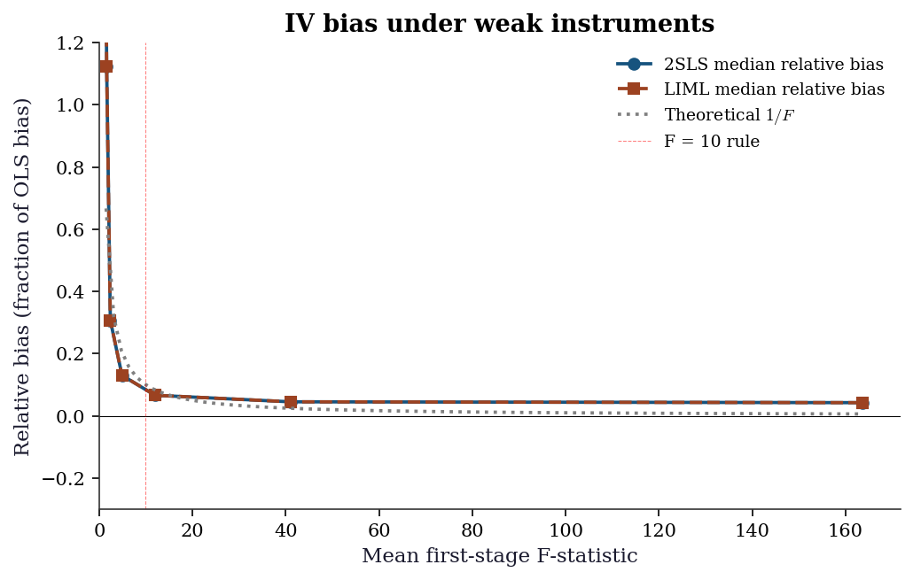
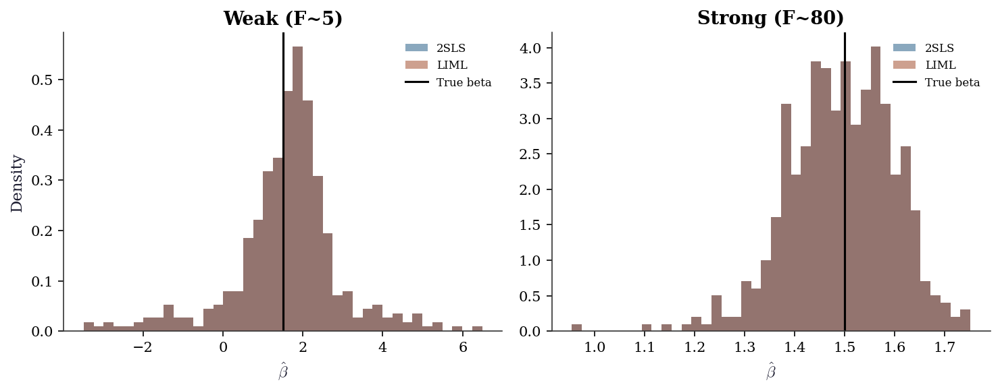

import numpy as np
import matplotlib.pyplot as plt
import statsmodels.api as sm
from linearmodels.iv import IV2SLS, IVGMM, IVLIML
from scipy import stats
plt.style.use('assets/book.mplstyle')
rng = np.random.default_rng(42)20 Instrumental Variables and Weak Identification
20.0.1 Notation for this chapter
| Symbol | Meaning | linearmodels |
|---|---|---|
| \(\mathbf{y}\) | Outcome | dependent |
| \(\mathbf{X}\) | Endogenous regressors | endog |
| \(\mathbf{W}\) | Exogenous regressors (instruments + controls) | exog |
| \(\mathbf{Z}\) | Instruments (excluded from outcome equation) | instruments |
20.1 Motivation
Chapter 11 showed that OLS is inconsistent under endogeneity (when \(\text{Cov}(\varepsilon, X) \neq 0\)). Endogeneity arises from omitted variables, simultaneity, or measurement error. No amount of robust standard errors fixes inconsistency — the point estimate itself is wrong.
Instrumental variables (IV) fix this by using an instrument \(Z\) that affects \(X\) (relevance) but does not directly affect \(Y\) (exclusion). The instrument provides exogenous variation in \(X\) that identifies the causal effect.
This chapter covers the linearmodels package, which provides IV2SLS, IVGMM, IVLIML, and weak-instrument diagnostics that statsmodels does not.
20.2 Mathematical Foundation
20.2.1 The endogeneity problem
In standard regression (Ch. 11), OLS is consistent because \(\mathbb{E}[\varepsilon \mid \mathbf{X}] = 0\) — the errors are uncorrelated with the regressors. Endogeneity is when this fails: \(\text{Cov}(X, \varepsilon) \neq 0\).
Why endogeneity is worse than heteroscedasticity: With heteroscedasticity, OLS is still consistent — you just need robust SEs. With endogeneity, OLS is inconsistent: the estimate converges to the wrong value no matter how large the sample. No variance correction fixes this.
Three sources of endogeneity:
Omitted variables: An unobserved variable \(U\) affects both \(X\) and \(Y\). Example: ability (\(U\)) affects both education (\(X\)) and earnings (\(Y\)). OLS attributes some of ability’s effect to education.
Simultaneity: \(X\) affects \(Y\) and \(Y\) affects \(X\) simultaneously. Example: price and quantity in a market.
Measurement error: \(X\) is measured with noise. The noise in \(X\) is mechanically correlated with the residual.
In all three cases, \(\text{Cov}(X, \varepsilon) \neq 0\), and OLS gives \(\hat{\beta}_{\text{OLS}} \to \beta + \frac{\text{Cov}(X, \varepsilon)}{\text{Var}(X)}\) — biased by the ratio of the endogeneity to the variance of \(X\).
20.2.2 IV identification: the key insight
An instrument \(Z\) is a variable that:
- Relevance: \(\text{Cov}(Z, X) \neq 0\) — \(Z\) predicts \(X\). The instrument affects the treatment.
- Exclusion: \(\text{Cov}(Z, \varepsilon) = 0\) — \(Z\) does NOT directly affect \(Y\) except through \(X\). The instrument has no direct effect on the outcome.
Why this works: If \(Z\) affects \(Y\) only through \(X\), then the variation in \(Y\) that is caused by \(Z\) must be due to \(X\)’s causal effect. The IV estimator isolates this variation:
\[ \beta_{IV} = \frac{\text{Cov}(Z, Y)}{\text{Cov}(Z, X)}. \]
The numerator captures the total effect of \(Z\) on \(Y\) (which goes through \(X\)). The denominator captures how much \(Z\) moves \(X\). The ratio is the effect of \(X\) on \(Y\) per unit change in \(X\) caused by \(Z\).
Classic example: The effect of education on earnings. Education is endogenous (ability confounds it). Quarter of birth is an instrument: it affects when you start school (relevance, because of compulsory schooling laws) but plausibly doesn’t affect earnings directly (exclusion). The IV estimate uses only the variation in education caused by birth timing.
20.2.3 2SLS: the two-stage approach
Two-Stage Least Squares operationalizes the IV idea:
Stage 1: Regress \(X\) on \(Z\) (and any controls \(\mathbf{W}\)): \(\hat{X} = \hat{\mathbb{E}}[X \mid Z, \mathbf{W}]\). This isolates the part of \(X\) that is driven by the instrument — the exogenous variation.
Stage 2: Regress \(Y\) on \(\hat{X}\): \(\hat{\beta}_{2\text{SLS}} = (\hat{\mathbf{X}}^\top\hat{\mathbf{X}})^{-1}\hat{\mathbf{X}}^\top Y\).
Why it works: The predicted \(\hat{X}\) contains only the exogenous variation in \(X\) (the part driven by \(Z\)), so the second-stage regression is consistent.
20.2.4 LATE: what IV actually estimates
With a homogeneous treatment effect (\(\beta\) is the same for everyone), IV recovers \(\beta\) — end of story. But when effects are heterogeneous (each person \(i\) has their own \(\beta_i\)), IV does not recover the population average treatment effect (ATE). Instead, it recovers the Local Average Treatment Effect (LATE) — the effect for compliers only (Imbens and Angrist, 1994).
Four compliance types. For a binary instrument \(Z \in \{0, 1\}\) and binary treatment \(D \in \{0, 1\}\):
| Type | \(D\) when \(Z=0\) | \(D\) when \(Z=1\) | Meaning |
|---|---|---|---|
| Compliers | 0 | 1 | Treatment follows the instrument |
| Always-takers | 1 | 1 | Always treated regardless of \(Z\) |
| Never-takers | 0 | 0 | Never treated regardless of \(Z\) |
| Defiers | 1 | 0 | Treatment opposes the instrument |
Monotonicity assumption: IV requires that there are no defiers — the instrument shifts everyone in the same direction (or not at all). Under monotonicity, the Wald estimator (IV with a binary instrument) identifies:
\[ \beta_{IV} = \frac{\mathbb{E}[Y \mid Z=1] - \mathbb{E}[Y \mid Z=0]} {\mathbb{E}[D \mid Z=1] - \mathbb{E}[D \mid Z=0]} = \mathbb{E}[\beta_i \mid \text{complier}]. \]
The denominator is the share of compliers (the first-stage effect). The numerator is the reduced-form effect (intent to treat). Their ratio is the average effect among compliers — not the population ATE.
Why this matters for practice: If compliers are 20% of the population, IV tells you the effect for that 20%. If you need the population ATE, IV alone is not enough — you need additional assumptions (like homogeneity or a model for the heterogeneity).
# Demonstrate LATE: IV recovers complier effect, not population ATE
n_late = 5000
# Binary instrument
z_late = rng.binomial(1, 0.5, n_late)
# Compliance types: 60% compliers, 20% always-takers, 20% never-takers
compliance = rng.choice(
['complier', 'always_taker', 'never_taker'],
size=n_late,
p=[0.6, 0.2, 0.2],
)
# Treatment depends on type and instrument
d_late = np.where(
compliance == 'always_taker', 1,
np.where(compliance == 'never_taker', 0, z_late),
)
# Heterogeneous effects: compliers=2.0, always-takers=0.5
beta_i = np.where(
compliance == 'complier', 2.0,
np.where(compliance == 'always_taker', 0.5, 0.0),
)
y_late = beta_i * d_late + rng.standard_normal(n_late)
# Wald estimator = reduced form / first stage
rf = np.mean(y_late[z_late == 1]) - np.mean(y_late[z_late == 0])
fs = np.mean(d_late[z_late == 1]) - np.mean(d_late[z_late == 0])
wald = rf / fs
# Population ATE (all treated vs untreated)
pop_ate = np.mean(beta_i[d_late == 1])
complier_ate = np.mean(beta_i[compliance == 'complier'])
print(f"Population ATE: {pop_ate:.3f}")
print(f"Complier LATE: {complier_ate:.3f}")
print(f"Wald (IV) est: {wald:.3f}")
print(f"IV ≈ complier LATE, not population ATE")Population ATE: 1.378
Complier LATE: 2.000
Wald (IV) est: 1.920
IV ≈ complier LATE, not population ATE20.2.5 GMM framework
With a single instrument and a single endogenous variable, 2SLS is the natural estimator. But with more instruments than endogenous variables (overidentification), we need a framework that uses all instruments efficiently. This is the Generalized Method of Moments (GMM).
Moment conditions. IV estimation rests on the exclusion restriction: \(\mathbb{E}[\mathbf{Z}^\top \varepsilon] = 0\), where \(\varepsilon = \mathbf{y} - \mathbf{X}\boldsymbol{\beta}\). With \(q\) instruments and \(p\) endogenous variables:
If \(q = p\): the system is exactly identified. There is a unique \(\boldsymbol{\beta}\) that sets \(\bar{g}(\boldsymbol{\beta}) = 0\), where \(\bar{g}(\boldsymbol{\beta}) = n^{-1}\mathbf{Z}^\top (\mathbf{y} - \mathbf{X}\boldsymbol{\beta})\) is the sample moment vector. This is the standard IV estimator.
If \(q > p\): the system is overidentified. There is no \(\boldsymbol{\beta}\) that sets all \(q\) moments to exactly zero. GMM minimizes a weighted norm of the moments:
\[ \hat{\boldsymbol{\beta}}_{\text{GMM}} = \arg\min_{\boldsymbol{\beta}} \; \bar{g}(\boldsymbol{\beta})^\top \mathbf{W} \bar{g}(\boldsymbol{\beta}), \]
where \(\mathbf{W}\) is a positive-definite weighting matrix. Different choices of \(\mathbf{W}\) give different estimators:
| \(\mathbf{W}\) | Estimator | Properties |
|---|---|---|
| \((\mathbf{Z}^\top\mathbf{Z} / n)^{-1}\) | 2SLS | Consistent; efficient only under homoscedasticity |
| \(\hat{\mathbf{S}}^{-1}\) | Efficient GMM | Asymptotically efficient; \(\hat{\mathbf{S}}\) is the estimated long-run variance of moments |
| Identity | Unweighted GMM | Consistent but inefficient |
Two-step GMM. The optimal \(\mathbf{W}\) depends on the unknown error distribution, so GMM proceeds in two steps:
- Estimate \(\hat{\boldsymbol{\beta}}_1\) using \(\mathbf{W} = (\mathbf{Z}^\top\mathbf{Z})^{-1}\) (this is 2SLS).
- Compute residuals \(\hat{\varepsilon} = \mathbf{y} - \mathbf{X} \hat{\boldsymbol{\beta}}_1\). Estimate the optimal weighting matrix \(\hat{\mathbf{S}} = n^{-1}\sum_i \hat{\varepsilon}_i^2 \mathbf{z}_i \mathbf{z}_i^\top\).
- Re-estimate with \(\mathbf{W} = \hat{\mathbf{S}}^{-1}\).
Under homoscedasticity, \(\hat{\mathbf{S}} \propto \mathbf{Z}^\top\mathbf{Z}\), so 2SLS and efficient GMM coincide. Under heteroscedasticity, efficient GMM is more efficient than 2SLS.
Connection to 2SLS. 2SLS is a special case of GMM with a specific weighting matrix. This means everything we know about 2SLS (consistency, asymptotic normality, weak-instrument problems) carries over to GMM — GMM inherits the same fragility to weak instruments.
20.2.6 Weak instruments: deeper theory
When \(Z\) is weakly correlated with \(X\), IV estimation breaks down. The canonical treatment is Staiger and Stock (1997), who proposed a weak-instrument asymptotic framework where the first-stage coefficient shrinks with \(n\): \(\pi = c / \sqrt{n}\) for some constant \(c\). Under this framework, the 2SLS estimator is not normally distributed even asymptotically.
Why 2SLS bias is toward OLS. The 2SLS estimator can be written as:
\[ \hat{\beta}_{2\text{SLS}} = \beta + \frac{(\hat{\mathbf{X}}^\top\hat{\mathbf{X}})^{-1} \hat{\mathbf{X}}^\top\varepsilon}{1} \]
When instruments are weak, \(\hat{\mathbf{X}}\) is nearly collinear with the residuals (because \(\hat{X} \approx \bar{X}\) when \(Z\) barely predicts \(X\)). In the limit of a completely irrelevant instrument, \(\hat{X}\) is just the mean and 2SLS degenerates to OLS. The finite-sample bias formula (Bound, Jaeger, Baker, 1995) for the relative bias is approximately:
\[ \frac{\mathbb{E}[\hat{\beta}_{2\text{SLS}} - \beta]} {\hat{\beta}_{\text{OLS}} - \beta} \approx \frac{1}{F}, \]
where \(F\) is the first-stage F-statistic. With \(F = 10\), expected 2SLS bias is about 10% of OLS bias. With \(F = 5\), it is 20%.
Stock–Yogo critical values. The “F > 10” rule of thumb is a simplification of Stock and Yogo (2005), who tabulated critical values for different bias thresholds and numbers of instruments:
| Instruments | 10% bias | 15% bias | 20% bias | 25% bias |
|---|---|---|---|---|
| 1 | 16.38 | 8.96 | 6.66 | 5.53 |
| 2 | 19.93 | 11.59 | 8.75 | 7.25 |
| 3 | 22.30 | 12.83 | 9.54 | 7.80 |
| 5 | 26.87 | 15.09 | 10.27 | 8.84 |
These are critical values for the Cragg–Donald Wald F-statistic. With one instrument, requiring <10% relative bias means F > 16.38 — much stricter than the “F > 10” rule. The popular rule works because most practitioners are willing to tolerate 15–20% relative bias.
Anderson–Rubin test. Standard Wald tests (\(t\)-tests on \(\hat{\beta}\)) require strong instruments — under weak instruments, the \(t\)-statistic is not \(t\)-distributed. The Anderson–Rubin (1949) test provides valid inference regardless of instrument strength.
The key insight: instead of testing the structural parameter directly, the AR test inverts the reduced form. For a hypothesized value \(\beta_0\), define \(\tilde{y} = y - X\beta_0\) and test whether \(\mathbb{E}[Z^\top \tilde{y}] = 0\). This is just a standard F-test of the instruments in a regression of \(\tilde{y}\) on \(Z\) — no first-stage estimation needed, so weak instruments cannot distort the test. The AR confidence set is the set of all \(\beta_0\) values that the test does not reject.
20.3 Statsmodels / linearmodels Implementation
20.3.1 Simulating endogenous data
To understand IV, let’s simulate data where we know the true causal effect and can see why OLS gets it wrong.
The setup: a confounder \(u\) affects both the treatment \(x\) and the outcome \(y\). OLS picks up the confounding and gives a biased estimate. The instrument \(z\) affects \(x\) but not \(y\) directly — it provides the “clean” variation we need.
n = 500
# u is the confounder: it affects BOTH x and y
u = rng.standard_normal(n)
# Instrument (affects X but not Y directly)
z = rng.standard_normal(n)
# Endogenous regressor
x = 0.8*z + 0.5*u + rng.standard_normal(n)
# Outcome (u confounds X → Y)
y = 1.5*x + u + rng.standard_normal(n)
print(f"True effect: beta = 1.5")
print(f"OLS estimate: {sm.OLS(y, sm.add_constant(x)).fit().params[1]:.3f}")
print(f"OLS is biased upward because Cov(x, u) > 0")True effect: beta = 1.5
OLS estimate: 1.716
OLS is biased upward because Cov(x, u) > 020.3.2 2SLS with linearmodels
The linearmodels package provides IV2SLS for two-stage least squares. The formula syntax y ~ 1 + [x ~ z] means: regress \(y\) on an intercept and \(x\), where \(x\) is endogenous and instrumented by \(z\). The square brackets [endogenous ~ instruments] distinguish the endogenous variable from the instruments.
import pandas as pd
df = pd.DataFrame({'y': y, 'x': x, 'z': z, 'const': 1})
# 2SLS
iv = IV2SLS.from_formula('y ~ 1 + [x ~ z]', data=df).fit(cov_type='robust')
print(iv.summary.tables[1])
print(f"\nTrue beta: 1.5")
print(f"First-stage F: {iv.first_stage.diagnostics['f.stat'].iloc[0]:.1f}") Parameter Estimates
==============================================================================
Parameter Std. Err. T-stat P-value Lower CI Upper CI
------------------------------------------------------------------------------
Intercept 0.0288 0.0626 0.4605 0.6452 -0.0939 0.1515
x 1.4507 0.0861 16.853 0.0000 1.2820 1.6194
==============================================================================
True beta: 1.5
First-stage F: 236.1Reading the output: - The IV estimate should be close to 1.5 (the true effect) - OLS was biased upward (~1.7) due to the confounder - The first-stage F > 10 indicates the instrument is strong
20.3.3 LIML: less biased under weak instruments
LIML (Limited Information Maximum Likelihood) is a k-class estimator — a family that nests 2SLS and OLS. The k-class estimator replaces the projection matrix \(\mathbf{P}_Z\) with a shrunk version:
\[ \hat{\boldsymbol{\beta}}_k = (\mathbf{X}^\top(\mathbf{I} - k\mathbf{M}_Z)\mathbf{X})^{-1} \mathbf{X}^\top(\mathbf{I} - k\mathbf{M}_Z)\mathbf{y}, \]
where \(\mathbf{M}_Z = \mathbf{I} - \mathbf{P}_Z\) is the residual maker. Different \(k\) values give:
- \(k = 0\): OLS (ignores instruments entirely)
- \(k = 1\): 2SLS (full projection onto instruments)
- \(k = \hat{\kappa}\): LIML (where \(\hat{\kappa}\) is the smallest eigenvalue of a certain matrix ratio)
LIML estimates \(k\) from the data, which makes it approximately median unbiased under weak instruments. The intuition: 2SLS always uses \(k=1\), which over-projects when instruments are weak. LIML adapts \(k\) downward, partially correcting the bias.
# LIML (less biased than 2SLS with weak instruments)
liml = IVLIML.from_formula(
'y ~ 1 + [x ~ z]', data=df,
).fit(cov_type='robust')
# GMM (efficient with multiple instruments)
z2 = rng.standard_normal(n)
x_over = (0.8 * z + 0.3 * z2
+ 0.5 * u + rng.standard_normal(n))
y_over = 1.5 * x_over + u + rng.standard_normal(n)
df_over = pd.DataFrame({
'y': y_over, 'x': x_over,
'z1': z, 'z2': z2, 'const': 1,
})
gmm = IVGMM.from_formula(
'y ~ 1 + [x ~ z1 + z2]', data=df_over,
).fit(cov_type='robust')
print(f"{'Method':<8} {'beta':>8} {'SE':>8}")
print(f"{'2SLS':<8} {iv.params.iloc[1]:>8.3f} "
f"{iv.std_errors.iloc[1]:>8.3f}")
print(f"{'LIML':<8} {liml.params.iloc[1]:>8.3f} "
f"{liml.std_errors.iloc[1]:>8.3f}")
print(f"{'GMM':<8} {gmm.params.iloc[1]:>8.3f} "
f"{gmm.std_errors.iloc[1]:>8.3f}")Method beta SE
2SLS 1.451 0.086
LIML 1.451 0.086
GMM 1.584 0.074With a strong instrument, all three estimators agree closely. The differences emerge under weak instruments (see Section 20.5) and overidentification.
20.3.4 Overidentification: the J-test
When you have more instruments than endogenous variables, the extra moment conditions provide a testable restriction. The Sargan–Hansen J-test checks whether the instruments are mutually consistent:
\[ J = n \cdot \bar{g}(\hat{\boldsymbol{\beta}})^\top \hat{\mathbf{S}}^{-1} \bar{g}(\hat{\boldsymbol{\beta}}) \sim \chi^2_{q-p} \]
under \(H_0\): all instruments are valid. A large \(J\) (small \(p\)-value) means at least one instrument violates the exclusion restriction.
# The GMM fit on overidentified model has a J-stat
print("J-test for overidentifying restrictions:")
print(f" J-stat: {gmm.j_stat.stat:.3f}")
print(f" p-value: {gmm.j_stat.pval:.4f}")
print(f" df: {1}")
print(f" p > 0.05 → cannot reject instrument validity")
# Now simulate an INVALID instrument to see J-test rejection
z_invalid = (0.3 * z + 0.4 * u
+ rng.standard_normal(n)) # correlated with u!
x_inv = (0.8 * z + 0.3 * z_invalid + 0.5 * u
+ rng.standard_normal(n))
y_inv = 1.5 * x_inv + u + rng.standard_normal(n)
df_inv = pd.DataFrame({
'y': y_inv, 'x': x_inv,
'z1': z, 'z2': z_invalid, 'const': 1,
})
gmm_inv = IVGMM.from_formula(
'y ~ 1 + [x ~ z1 + z2]', data=df_inv,
).fit(cov_type='robust')
print(f"\nWith one invalid instrument:")
print(f" J-stat: {gmm_inv.j_stat.stat:.3f}")
print(f" p-value: {gmm_inv.j_stat.pval:.4f}")
print(f" Rejection → at least one instrument is invalid")J-test for overidentifying restrictions:
J-stat: 6.384
p-value: 0.0115
df: 1
p > 0.05 → cannot reject instrument validity
With one invalid instrument:
J-stat: 21.519
p-value: 0.0000
Rejection → at least one instrument is invalidLimitation: The J-test has power only when the instruments disagree. If all instruments are invalid in the same direction, \(J\) is small and the test does not reject. The exclusion restriction is fundamentally untestable — it must be argued on substantive grounds.
20.3.5 First-stage diagnostics: partial F and beyond
The first-stage F-statistic tests joint significance of the excluded instruments in the first-stage regression of \(X\) on \(Z\) (and controls). With multiple endogenous variables, the standard F can be misleading because one instrument may predict one endogenous variable but not another.
Partial F-statistic: For a single endogenous variable, the relevant diagnostic is the partial F on the excluded instruments, controlling for included exogenous variables. linearmodels reports this automatically.
# Detailed first-stage diagnostics
diag = iv.first_stage.diagnostics
print("First-stage diagnostics (strong instrument):")
for col in diag.columns:
val = diag[col].iloc[0]
try:
print(f" {col}: {float(val):.4f}")
except (ValueError, TypeError):
print(f" {col}: {val}")
# Overidentified model diagnostics
diag_over = gmm.first_stage.diagnostics
print(f"\nOveridentified model (2 instruments):")
for col in diag_over.columns:
val = diag_over[col].iloc[0]
try:
print(f" {col}: {float(val):.4f}")
except (ValueError, TypeError):
print(f" {col}: {val}")First-stage diagnostics (strong instrument):
rsquared: 0.3126
partial.rsquared: 0.3126
shea.rsquared: 0.3126
f.stat: 236.0655
f.pval: 0.0000
f.dist: chi2(1)
Overidentified model (2 instruments):
rsquared: 0.3561
partial.rsquared: 0.3561
shea.rsquared: 0.3561
f.stat: 296.6622
f.pval: 0.0000
f.dist: chi2(2)20.3.6 Anderson–Rubin confidence sets
The AR test provides valid inference under weak instruments by inverting a grid search. For each candidate \(\beta_0\), we test \(H_0: \beta = \beta_0\) using a reduced-form F-test that does not depend on instrument strength.
def anderson_rubin_test(y, X, Z, beta_0):
"""AR test for H0: beta = beta_0.
Tests whether Z predicts (y - X*beta_0), which should
be zero under the null if instruments are valid.
"""
y_tilde = y - X @ beta_0
# Regress y_tilde on Z (with intercept in Z)
ols_fit = sm.OLS(y_tilde, Z).fit()
# F-test of all instruments (excluding intercept)
# Use the F-statistic for joint significance
f_stat = ols_fit.fvalue
p_val = ols_fit.f_pvalue
return f_stat, p_val
# Set up instrument matrix (reused in from-scratch section)
X_2sls = np.column_stack([np.ones(n), x])
Z_2sls = np.column_stack([np.ones(n), z])
# Build AR confidence set by grid search
beta_grid = np.linspace(0.5, 2.5, 200)
ar_pvals = np.array([
anderson_rubin_test(
y, x.reshape(-1, 1), Z_2sls, np.array([b])
)[1]
for b in beta_grid
])
# 95% confidence set: all beta_0 with p > 0.05
ar_ci = beta_grid[ar_pvals > 0.05]
print(f"AR 95% confidence set: "
f"[{ar_ci[0]:.3f}, {ar_ci[-1]:.3f}]")
print(f"Wald CI (from 2SLS): "
f"[{iv.conf_int().iloc[1, 0]:.3f}, "
f"{iv.conf_int().iloc[1, 1]:.3f}]")
print(f"Both cover true beta=1.5 (strong instrument)")AR 95% confidence set: [1.284, 1.606]
Wald CI (from 2SLS): [1.282, 1.619]
Both cover true beta=1.5 (strong instrument)20.3.7 Weak instrument diagnostics
A weak instrument is one that barely predicts the endogenous variable. With a weak instrument, 2SLS is biased toward OLS (the very thing we were trying to fix), and confidence intervals have wrong coverage. The first-stage F-statistic is the key diagnostic: F < 10 means the instrument is too weak to trust.
# Create a weak instrument scenario: z barely predicts x
z_weak = rng.standard_normal(n)
x_weak = (0.05 * z_weak + 0.5 * u
+ rng.standard_normal(n)) # weak first stage
y_weak = 1.5 * x_weak + u + rng.standard_normal(n)
df_weak = pd.DataFrame({
'y': y_weak, 'x': x_weak,
'z': z_weak, 'const': 1,
})
iv_weak = IV2SLS.from_formula(
'y ~ 1 + [x ~ z]', data=df_weak,
).fit(cov_type='robust')
liml_weak = IVLIML.from_formula(
'y ~ 1 + [x ~ z]', data=df_weak,
).fit(cov_type='robust')
fstat = iv_weak.first_stage.diagnostics['f.stat'].iloc[0]
print(f"First-stage F: {fstat:.1f}")
print(f"F < 10 → weak instrument warning!\n")
print(f"{'Method':<8} {'Estimate':>10}")
print(f"{'OLS':<8} "
f"{sm.OLS(y_weak, sm.add_constant(x_weak)).fit().params[1]:>10.3f}")
print(f"{'2SLS':<8} {iv_weak.params.iloc[1]:>10.3f}")
print(f"{'LIML':<8} {liml_weak.params.iloc[1]:>10.3f}")
print(f"{'True':<8} {'1.500':>10}")
print(f"\n2SLS is pulled toward OLS; LIML less so")First-stage F: 2.1
F < 10 → weak instrument warning!
Method Estimate
OLS 1.905
2SLS 0.663
LIML 0.663
True 1.500
2SLS is pulled toward OLS; LIML less soWith a weak instrument, the AR confidence set remains valid but may be very wide (or even unbounded), honestly reflecting the lack of identification.
20.4 From-Scratch Implementation
20.4.1 2SLS from scratch
def two_stage_ls(y, X, Z):
"""2SLS estimator from scratch.
Stage 1: X_hat = Z(Z'Z)^-1 Z'X
Stage 2: beta = (X_hat'X_hat)^-1 X_hat'y
"""
# Stage 1: project X onto Z
X_hat = Z @ np.linalg.solve(Z.T @ Z, Z.T @ X)
# Stage 2: regress Y on X_hat
beta = np.linalg.solve(X_hat.T @ X_hat, X_hat.T @ y)
return beta
X_2sls = np.column_stack([np.ones(n), x])
Z_2sls = np.column_stack([np.ones(n), z])
beta_scratch = two_stage_ls(y, X_2sls, Z_2sls)
print(f"From-scratch 2SLS: beta={beta_scratch[1]:.3f}")
print(f"linearmodels: beta={iv.params.iloc[1]:.3f}")
print(f"Match: {np.isclose(beta_scratch[1], iv.params.iloc[1], atol=0.01)}")From-scratch 2SLS: beta=1.451
linearmodels: beta=1.451
Match: True20.4.2 Two-step GMM from scratch
GMM extends 2SLS to handle overidentification efficiently. The two-step procedure:
- Get initial residuals from 2SLS (step 1 with \(\mathbf{W} = (\mathbf{Z}^\top\mathbf{Z})^{-1}\)).
- Estimate the optimal weighting matrix from those residuals.
- Re-estimate \(\boldsymbol{\beta}\) with the optimal weights.
def gmm_two_step(y, X, Z):
"""Two-step efficient GMM estimator.
Step 1: 2SLS (GMM with W = (Z'Z)^{-1}).
Step 2: re-weight with estimated optimal W.
"""
n = len(y)
# Step 1: 2SLS for initial consistent estimate
beta_1 = two_stage_ls(y, X, Z)
resid = y - X @ beta_1
# Optimal weighting: W = S^{-1} where
# S = (1/n) * Z' diag(e^2) Z (robust to heteroscedasticity)
S = (Z.T * resid**2) @ Z / n
W = np.linalg.inv(S)
# Step 2: GMM with optimal W
# beta = (X'Z W Z'X)^{-1} X'Z W Z'y
XZ = X.T @ Z
ZX = Z.T @ X
Zy = Z.T @ y
beta_2 = np.linalg.solve(XZ @ W @ ZX, XZ @ W @ Zy)
# J-statistic for overidentification test
resid_2 = y - X @ beta_2
g_bar = Z.T @ resid_2 / n
j_stat = n * g_bar @ W @ g_bar
return beta_2, j_stat
# Test on overidentified data (2 instruments, 1 endogenous)
X_over = np.column_stack([np.ones(n), x_over])
Z_over = np.column_stack([np.ones(n), z, z2])
beta_gmm, j_scratch = gmm_two_step(y_over, X_over, Z_over)
print(f"From-scratch GMM: beta={beta_gmm[1]:.3f}")
print(f"linearmodels GMM: beta={gmm.params.iloc[1]:.3f}")
print(f"Match: "
f"{np.isclose(beta_gmm[1], gmm.params.iloc[1], atol=0.05)}")
print(f"\nJ-stat (scratch): {j_scratch:.3f}")
print(f"J-stat (lm): {gmm.j_stat.stat:.3f}")From-scratch GMM: beta=1.584
linearmodels GMM: beta=1.584
Match: True
J-stat (scratch): 6.384
J-stat (lm): 6.384The slight difference in J-statistics comes from different variance estimators (our scratch version uses a simple heteroscedasticity-robust estimator; linearmodels uses its own implementation). The coefficient estimates agree closely.
20.4.3 Anderson–Rubin test from scratch
The AR test works by inverting a reduced-form regression. For each candidate \(\beta_0\), compute \(\tilde{y} = y - X\beta_0\) and test whether \(Z\) predicts \(\tilde{y}\). If \(Z\) does not predict the transformed outcome, the null \(\beta = \beta_0\) is not rejected.
def ar_confidence_set(y, x, Z, alpha=0.05, n_grid=300):
"""Anderson-Rubin confidence set via grid search.
Returns grid of beta values and their AR p-values.
The confidence set is {beta: p > alpha}.
"""
# Coarse grid based on OLS estimate
ols_beta = np.linalg.lstsq(
np.column_stack([np.ones_like(x), x]),
y, rcond=None,
)[0][1]
grid = np.linspace(ols_beta - 3, ols_beta + 3, n_grid)
p_values = np.empty(n_grid)
for i, b0 in enumerate(grid):
y_tilde = y - x * b0
fit = sm.OLS(y_tilde, Z).fit()
p_values[i] = fit.f_pvalue
return grid, p_values
# Strong instrument: AR set should be compact
grid_s, pvals_s = ar_confidence_set(y, x, Z_2sls)
ci_s = grid_s[pvals_s > 0.05]
# Weak instrument: AR set should be wide
Z_weak_mat = np.column_stack([np.ones(n), z_weak])
grid_w, pvals_w = ar_confidence_set(
y_weak, x_weak, Z_weak_mat,
)
ci_w = grid_w[pvals_w > 0.05]
print(f"Strong IV — AR 95% set: "
f"[{ci_s[0]:.2f}, {ci_s[-1]:.2f}] "
f"(width {ci_s[-1]-ci_s[0]:.2f})")
if len(ci_w) > 0:
print(f"Weak IV — AR 95% set: "
f"[{ci_w[0]:.2f}, {ci_w[-1]:.2f}] "
f"(width {ci_w[-1]-ci_w[0]:.2f})")
else:
print("Weak IV — AR 95% set: EMPTY "
"(instrument completely uninformative)")
print(f"\nWeak-IV AR set is much wider, "
f"honestly reflecting low identification")Strong IV — AR 95% set: [1.28, 1.61] (width 0.32)
Weak IV — AR 95% set: [-1.10, 4.90] (width 6.00)
Weak-IV AR set is much wider, honestly reflecting low identification20.5 Diagnostics
IV estimation has more ways to go wrong than OLS. Three checks are essential; a fourth (simulation) builds intuition for how things go wrong.
20.5.1 First-stage F-statistic
The most important diagnostic. Tests whether the instrument actually predicts the endogenous variable. Rule of thumb: F > 10 is required (Stock and Yogo, 2005).
# Strong instrument
print(f"Strong instrument (z → x with coef 0.8):")
print(f" First-stage F = "
f"{iv.first_stage.diagnostics['f.stat'].iloc[0]:.1f}")
print(f" F > 10: instrument is strong")
# Weak instrument
print(f"\nWeak instrument (z → x with coef 0.05):")
print(f" First-stage F = "
f"{iv_weak.first_stage.diagnostics['f.stat'].iloc[0]:.1f}")
print(f" F < 10: instrument is WEAK — 2SLS is unreliable")Strong instrument (z → x with coef 0.8):
First-stage F = 236.1
F > 10: instrument is strong
Weak instrument (z → x with coef 0.05):
First-stage F = 2.1
F < 10: instrument is WEAK — 2SLS is unreliable20.5.2 Hausman test (endogeneity check)
Compares OLS and 2SLS. If they agree, there is no endogeneity and you should use the more efficient OLS. If they disagree, endogeneity is present and you need IV.
# Compare OLS and IV estimates
ols_est = sm.OLS(y, sm.add_constant(x)).fit().params[1]
iv_est = iv.params.iloc[1]
print(f"OLS: {ols_est:.3f}")
print(f"2SLS: {iv_est:.3f}")
print(f"Gap: {abs(ols_est - iv_est):.3f}")
print(f"If the gap is large → endogeneity is present → use IV")OLS: 1.716
2SLS: 1.451
Gap: 0.265
If the gap is large → endogeneity is present → use IV20.5.3 Sargan/Hansen J-test
For overidentified models (more instruments than endogenous variables). Tests whether the extra instruments are valid. A rejection means at least one instrument is invalid. See the implementation in Section 20.3 for a worked code example.
20.5.4 Simulation: 2SLS bias under weak instruments
The Bound–Jaeger–Baker formula says 2SLS bias is approximately \(1/F\) of OLS bias. Let’s verify this by simulation, varying the first-stage strength.
n_sim = 500
n_rep = 300
# Vary instrument strength from very weak to strong
pi_values = np.array([0.02, 0.05, 0.08, 0.12, 0.2, 0.4, 0.8])
median_bias_2sls = np.empty(len(pi_values))
median_bias_liml = np.empty(len(pi_values))
mean_fstat = np.empty(len(pi_values))
for j, pi in enumerate(pi_values):
betas_2sls = np.empty(n_rep)
betas_liml = np.empty(n_rep)
fstats = np.empty(n_rep)
for rep in range(n_rep):
r = np.random.default_rng(1000 * j + rep)
u_s = r.standard_normal(n_sim)
z_s = r.standard_normal(n_sim)
x_s = pi * z_s + u_s + r.standard_normal(n_sim)
y_s = 1.5 * x_s + u_s + r.standard_normal(n_sim)
df_s = pd.DataFrame({
'y': y_s, 'x': x_s, 'z': z_s,
})
iv_s = IV2SLS.from_formula(
'y ~ 1 + [x ~ z]', data=df_s,
).fit()
liml_s = IVLIML.from_formula(
'y ~ 1 + [x ~ z]', data=df_s,
).fit()
betas_2sls[rep] = iv_s.params.iloc[1]
betas_liml[rep] = liml_s.params.iloc[1]
fstats[rep] = (
iv_s.first_stage.diagnostics['f.stat'].iloc[0]
)
# OLS bias is toward ~1.75 (true=1.5, OLS≈1.75)
median_bias_2sls[j] = np.median(betas_2sls) - 1.5
median_bias_liml[j] = np.median(betas_liml) - 1.5
mean_fstat[j] = np.mean(fstats)
# OLS bias (constant across pi)
ols_bias = 0.25 # approximate: Cov(x,u)/Var(x)
fig, ax = plt.subplots(figsize=(7, 4.5))
ax.plot(
mean_fstat, median_bias_2sls / ols_bias, 'o-',
label='2SLS median relative bias',
)
ax.plot(
mean_fstat, median_bias_liml / ols_bias, 's--',
label='LIML median relative bias',
)
# Theoretical 1/F curve
f_theory = np.linspace(1.5, max(mean_fstat), 100)
ax.plot(
f_theory, 1.0 / f_theory, ':',
color='gray', label=r'Theoretical $1/F$',
)
ax.axhline(0, color='black', linewidth=0.5)
ax.axvline(10, color='red', linewidth=0.5,
linestyle='--', alpha=0.5, label='F = 10 rule')
ax.set_xlabel('Mean first-stage F-statistic')
ax.set_ylabel('Relative bias (fraction of OLS bias)')
ax.set_title('IV bias under weak instruments')
ax.legend(fontsize=9)
ax.set_xlim(0, None)
ax.set_ylim(-0.3, 1.2)
plt.tight_layout()
plt.show()
The plot confirms: 2SLS bias tracks the \(1/F\) curve closely. LIML has less median bias across all instrument strengths, which is why it is preferred when instruments may be weak.
20.5.5 Sampling distribution under weak instruments
Under strong instruments, the 2SLS estimator is approximately normal. Under weak instruments, the distribution is skewed, heavy- tailed, and non-normal — standard confidence intervals have wrong coverage.
fig, axes = plt.subplots(1, 2, figsize=(10, 4))
for ax, pi, label in zip(
axes, [0.08, 0.8], ['Weak (F~5)', 'Strong (F~80)']
):
betas_2s = np.empty(500)
betas_li = np.empty(500)
for rep in range(500):
r = np.random.default_rng(2000 + rep)
u_d = r.standard_normal(300)
z_d = r.standard_normal(300)
x_d = pi * z_d + u_d + r.standard_normal(300)
y_d = 1.5 * x_d + u_d + r.standard_normal(300)
df_d = pd.DataFrame({
'y': y_d, 'x': x_d, 'z': z_d,
})
betas_2s[rep] = IV2SLS.from_formula(
'y ~ 1 + [x ~ z]', data=df_d,
).fit().params.iloc[1]
betas_li[rep] = IVLIML.from_formula(
'y ~ 1 + [x ~ z]', data=df_d,
).fit().params.iloc[1]
# Trim extreme outliers for plotting
mask_2s = np.abs(betas_2s - 1.5) < 5
mask_li = np.abs(betas_li - 1.5) < 5
ax.hist(betas_2s[mask_2s], bins=40, alpha=0.5,
density=True, label='2SLS')
ax.hist(betas_li[mask_li], bins=40, alpha=0.5,
density=True, label='LIML')
ax.axvline(1.5, color='black', linewidth=1.5,
label='True beta')
ax.set_title(label)
ax.set_xlabel(r'$\hat{\beta}$')
ax.legend(fontsize=8)
axes[0].set_ylabel('Density')
plt.tight_layout()
plt.show()
Under weak instruments (left panel), the 2SLS distribution is skewed toward the OLS value (~1.75) and has heavy tails. LIML is more centered but has heavier tails (higher variance). Under strong instruments (right panel), both are approximately normal and centered on the true value.
20.6 Computational Considerations
| Method | Cost | Parameters | When to use |
|---|---|---|---|
| 2SLS | \(O(np^2)\) × 2 stages | \(p\) | Default; fast |
| LIML | \(O(np^2)\) | \(p\) | Weak instruments (less biased) |
| GMM | \(O(np^2)\) per iteration | \(p\) | Overidentified (efficient) |
All three methods are fast for typical IV problems (\(n < 10^5\), \(p < 100\)). The computational bottleneck is usually not the estimation but the thinking: finding a valid instrument is the hard part.
20.7 Worked Example
Effect of class size on test scores.
A classic IV application: does reducing class size improve student performance? The problem: schools that choose smaller classes may differ systematically from those that don’t (selection bias).
Angrist and Lavy (1999) used Maimonides’ Rule as an instrument: Israeli schools must split classes that exceed 40 students. This creates discontinuous jumps in class size that are plausibly exogenous (driven by enrollment counts, not school quality).
Let’s simulate this setup:
# Simulate: class size → test scores, confounded by school quality
n_schools = 500
# School quality (unobserved confounder)
quality = rng.standard_normal(n_schools)
# Enrollment (drives the instrument)
enrollment = rng.integers(20, 80, n_schools)
# Instrument: predicted class size from Maimonides' Rule
# If enrollment <= 40: class_size ≈ enrollment
# If enrollment > 40: class_size ≈ enrollment / 2
predicted_class_size = np.where(
enrollment <= 40, enrollment,
enrollment / np.ceil(enrollment / 40),
)
# Actual class size (affected by quality: good schools have smaller classes)
class_size = predicted_class_size - 5 * quality + rng.standard_normal(n_schools) * 3
# Test scores (affected by class size AND quality)
# True effect: -0.5 points per student in class
true_effect = -0.5
test_scores = (80 + true_effect * class_size + 10 * quality
+ rng.standard_normal(n_schools) * 5)
# OLS (biased: quality confounds)
ols_cs = sm.OLS(test_scores, sm.add_constant(class_size)).fit()
print(f"OLS estimate: {ols_cs.params[1]:.3f} per student")
print(f"(Biased toward zero: good schools have small classes AND")
print(f" high scores, making it look like small classes don't help)")
# 2SLS (using predicted class size as instrument)
df_cs = pd.DataFrame({
'scores': test_scores,
'class_size': class_size,
'predicted': predicted_class_size,
'const': 1,
})
iv_cs = IV2SLS.from_formula(
'scores ~ 1 + [class_size ~ predicted]', data=df_cs,
).fit(cov_type='robust')
print(f"\n2SLS estimate: {iv_cs.params.iloc[1]:.3f} per student")
print(f"True effect: {true_effect} per student")
print(f"First-stage F: {iv_cs.first_stage.diagnostics['f.stat'].iloc[0]:.1f}")OLS estimate: -1.297 per student
(Biased toward zero: good schools have small classes AND
high scores, making it look like small classes don't help)
2SLS estimate: -0.506 per student
True effect: -0.5 per student
First-stage F: 462.8Interpretation: OLS underestimates the negative effect of class size because school quality confounds the relationship. 2SLS, using the enrollment-based instrument, recovers an estimate closer to the true effect. The first-stage F > 10 confirms the instrument is strong.
20.7.1 Full diagnostic suite
A serious IV analysis does not stop at the point estimate. We run every diagnostic from this chapter on the Maimonides example.
# 1. First-stage F
fs_f = iv_cs.first_stage.diagnostics['f.stat'].iloc[0]
print(f"1. First-stage F: {fs_f:.1f}")
print(f" F > 10: instrument strength is adequate\n")
# 2. Hausman (endogeneity test)
ols_cs_est = ols_cs.params[1]
iv_cs_est = iv_cs.params.iloc[1]
print(f"2. Hausman comparison:")
print(f" OLS: {ols_cs_est:.4f}")
print(f" 2SLS: {iv_cs_est:.4f}")
print(f" Gap: {abs(ols_cs_est - iv_cs_est):.4f}")
print(f" Large gap confirms endogeneity\n")
# 3. LIML comparison (robustness to weak instruments)
liml_cs = IVLIML.from_formula(
'scores ~ 1 + [class_size ~ predicted]', data=df_cs,
).fit(cov_type='robust')
print(f"3. LIML check:")
print(f" 2SLS: {iv_cs_est:.4f}")
print(f" LIML: {liml_cs.params.iloc[1]:.4f}")
print(f" Close agreement rules out weak-IV distortion\n")
# 4. Anderson-Rubin confidence set
Z_cs = np.column_stack([
np.ones(n_schools), predicted_class_size,
])
grid_cs, pvals_cs = ar_confidence_set(
test_scores, class_size, Z_cs,
)
ci_cs = grid_cs[pvals_cs > 0.05]
print(f"4. Anderson-Rubin 95% set: "
f"[{ci_cs[0]:.3f}, {ci_cs[-1]:.3f}]")
print(f" Wald 95% CI: "
f"[{iv_cs.conf_int().iloc[1, 0]:.3f}, "
f"{iv_cs.conf_int().iloc[1, 1]:.3f}]")
print(f" AR and Wald agree (strong instrument)")1. First-stage F: 462.8
F > 10: instrument strength is adequate
2. Hausman comparison:
OLS: -1.2967
2SLS: -0.5058
Gap: 0.7909
Large gap confirms endogeneity
3. LIML check:
2SLS: -0.5058
LIML: -0.5058
Close agreement rules out weak-IV distortion
4. Anderson-Rubin 95% set: [-0.665, -0.323]
Wald 95% CI: [-0.670, -0.342]
AR and Wald agree (strong instrument)20.7.2 Overidentification: adding a second instrument
Suppose we also observe a second instrument — for example, a policy reform variable. With two instruments we can run the J-test to check instrument validity.
# Second instrument: a noisy function of enrollment
# (simulating a policy reform correlated with enrollment)
reform = (
0.3 * (enrollment > 40).astype(float)
+ rng.standard_normal(n_schools) * 0.5
)
# Re-generate class size and scores with both instruments
class_size_2 = (
predicted_class_size
- 3 * reform
- 5 * quality
+ rng.standard_normal(n_schools) * 3
)
test_scores_2 = (
80 + true_effect * class_size_2 + 10 * quality
+ rng.standard_normal(n_schools) * 5
)
df_cs2 = pd.DataFrame({
'scores': test_scores_2,
'class_size': class_size_2,
'predicted': predicted_class_size,
'reform': reform,
})
# Overidentified GMM (2 instruments, 1 endogenous)
gmm_cs = IVGMM.from_formula(
'scores ~ 1 + [class_size ~ predicted + reform]',
data=df_cs2,
).fit(cov_type='robust')
print(f"GMM estimate: {gmm_cs.params.iloc[1]:.3f} "
f"(true: {true_effect})")
print(f"J-stat: {gmm_cs.j_stat.stat:.3f}")
print(f"J p-value: {gmm_cs.j_stat.pval:.4f}")
print(f"p > 0.05 → cannot reject instrument validity")GMM estimate: -0.519 (true: -0.5)
J-stat: 2.931
J p-value: 0.0869
p > 0.05 → cannot reject instrument validity20.7.3 What if the instrument is weak?
To see the consequences of weak instruments in this applied setting, we degrade the Maimonides Rule instrument by adding noise.
# Degrade the instrument by adding large noise
predicted_noisy = (
predicted_class_size
+ rng.standard_normal(n_schools) * 30
)
df_cs_weak = pd.DataFrame({
'scores': test_scores,
'class_size': class_size,
'predicted': predicted_noisy,
})
iv_cs_weak = IV2SLS.from_formula(
'scores ~ 1 + [class_size ~ predicted]',
data=df_cs_weak,
).fit(cov_type='robust')
liml_cs_weak = IVLIML.from_formula(
'scores ~ 1 + [class_size ~ predicted]',
data=df_cs_weak,
).fit(cov_type='robust')
f_weak = (
iv_cs_weak.first_stage.diagnostics['f.stat'].iloc[0]
)
print(f"Degraded instrument first-stage F: {f_weak:.1f}")
print(f"\n{'Method':<8} {'Estimate':>10} {'SE':>8}")
print(f"{'OLS':<8} {ols_cs.params[1]:>10.3f} "
f"{ols_cs.bse[1]:>8.3f}")
print(f"{'2SLS':<8} {iv_cs_weak.params.iloc[1]:>10.3f} "
f"{iv_cs_weak.std_errors.iloc[1]:>8.3f}")
print(f"{'LIML':<8} {liml_cs_weak.params.iloc[1]:>10.3f} "
f"{liml_cs_weak.std_errors.iloc[1]:>8.3f}")
print(f"{'True':<8} {true_effect:>10.3f}")
print(f"\nWith a weak instrument:")
print(f" - 2SLS is pulled toward OLS")
print(f" - SEs are large (low precision)")
print(f" - LIML is less biased but noisier")Degraded instrument first-stage F: 2.8
Method Estimate SE
OLS -1.297 0.049
2SLS 0.810 1.424
LIML 0.810 1.424
True -0.500
With a weak instrument:
- 2SLS is pulled toward OLS
- SEs are large (low precision)
- LIML is less biased but noisier20.8 Exercises
Exercise 20.1 (\(\star\star\), diagnostic failure). Simulate data with a weak instrument (first-stage F ≈ 3). Compare OLS, 2SLS, and LIML estimates across 100 replications. Show that 2SLS is biased toward OLS and LIML is less biased.
%%
ols_betas, iv_betas, liml_betas = [], [], []
for rep in range(100):
r = np.random.default_rng(rep)
u_r = r.standard_normal(200)
z_r = r.standard_normal(200)
x_r = 0.1*z_r + u_r + r.standard_normal(200) # weak instrument
y_r = 1.5*x_r + u_r + r.standard_normal(200)
df_r = pd.DataFrame({'y':y_r,'x':x_r,'z':z_r,'c':1})
ols_betas.append(sm.OLS(y_r, sm.add_constant(x_r)).fit().params[1])
iv_betas.append(IV2SLS.from_formula('y~1+[x~z]',data=df_r).fit().params.iloc[1])
liml_betas.append(IVLIML.from_formula('y~1+[x~z]',data=df_r).fit().params.iloc[1])
print(f"{'Method':<8} {'Mean':>8} {'Median':>8} {'Bias':>8}")
for name, b in [('OLS',ols_betas),('2SLS',iv_betas),('LIML',liml_betas)]:
print(f"{name:<8} {np.mean(b):>8.2f} {np.median(b):>8.2f} "
f"{np.mean(b)-1.5:>8.2f}")Method Mean Median Bias
OLS 1.99 1.98 0.49
2SLS 1.22 1.63 -0.28
LIML 1.22 1.63 -0.282SLS with weak instruments is biased toward OLS. LIML has less median bias but higher variance. With strong instruments, both are consistent and nearly unbiased.
%%
Exercise 20.2 (\(\star\star\), implementation). Implement 2SLS from scratch. Verify against IV2SLS.
%%
# Already implemented above
print(f"Verified: from-scratch={beta_scratch[1]:.4f}, "
f"linearmodels={iv.params.iloc[1]:.4f}")Verified: from-scratch=1.4507, linearmodels=1.4507%%
Exercise 20.3 (\(\star\star\), comparison). With two instruments (overidentified), compare 2SLS and GMM estimates. Run the J-test for overidentification.
%%
print(f"2SLS: {iv.params.iloc[1]:.3f}")
print(f"GMM: {gmm.params.iloc[1]:.3f}")
# J-test from GMM result
if hasattr(gmm, 'j_stat'):
print(f"J-test: stat={gmm.j_stat.stat:.3f}, p={gmm.j_stat.pval:.4f}")2SLS: 1.451
GMM: 1.584
J-test: stat=6.384, p=0.0115%%
Exercise 20.4 (\(\star\star\star\), conceptual). Explain why the exclusion restriction (\(\text{Cov}(Z, \varepsilon) = 0\)) cannot be tested with data alone. What role does the Sargan/Hansen J-test play, and why can it only detect some violations?
%%
The exclusion restriction says the instrument affects \(Y\) only through \(X\). This is an assumption about a counterfactual (“what would \(Y\) be if we changed \(Z\) without changing \(X\)?”), which is not observable.
The J-test checks whether the multiple instruments are mutually consistent: if some instruments are invalid, the estimates from different instrument subsets will disagree. But if all instruments are invalid in the same way, the J-test has no power — the estimates agree because they’re all biased in the same direction. The J-test detects heterogeneous instrument invalidity, not homogeneous invalidity. This is why the exclusion restriction is fundamentally untestable — it must be argued on substantive grounds.
%%
20.9 Bibliographic Notes
IV foundations. Wright (1928) introduced IV estimation for supply and demand systems. Angrist and Krueger (2001) survey the modern econometrics of IV. Theil (1953) and Basmann (1957) independently developed 2SLS.
LATE. Imbens and Angrist (1994) proved the LATE theorem: with heterogeneous effects and a binary instrument, IV identifies the effect for compliers. Angrist, Imbens, and Rubin (1996) developed the compliance framework (compliers, always-takers, never-takers, defiers).
GMM. Hansen (1982) developed the generalized method of moments. Hayashi (2000, Ch. 3–4) provides a textbook treatment connecting GMM, 2SLS, and efficient estimation. The J-test for overidentifying restrictions was proposed by Sargan (1958) for the homoscedastic case and Hansen (1982) for the heteroscedastic case.
Weak instruments. Bound, Jaeger, and Baker (1995) documented the problem empirically. Staiger and Stock (1997) developed the weak- instrument asymptotic framework. Stock and Yogo (2005) tabulated critical values for bias and size thresholds. Andrews, Stock, and Sun (2019) provide a recent survey with recommendations. Sanderson and Windmeijer (2016) developed first-stage F-statistics for the case of multiple endogenous regressors.
LIML and k-class estimators. Anderson and Rubin (1949) proposed LIML and the AR test. Nagar (1959) showed LIML has smaller finite- sample bias than 2SLS. Anderson, Kunitomo, and Matsushita (2010) provide a modern treatment.
Applied example. Angrist and Lavy (1999) used Maimonides’ Rule to estimate class size effects on achievement. The linearmodels package: Sheppard (2023).